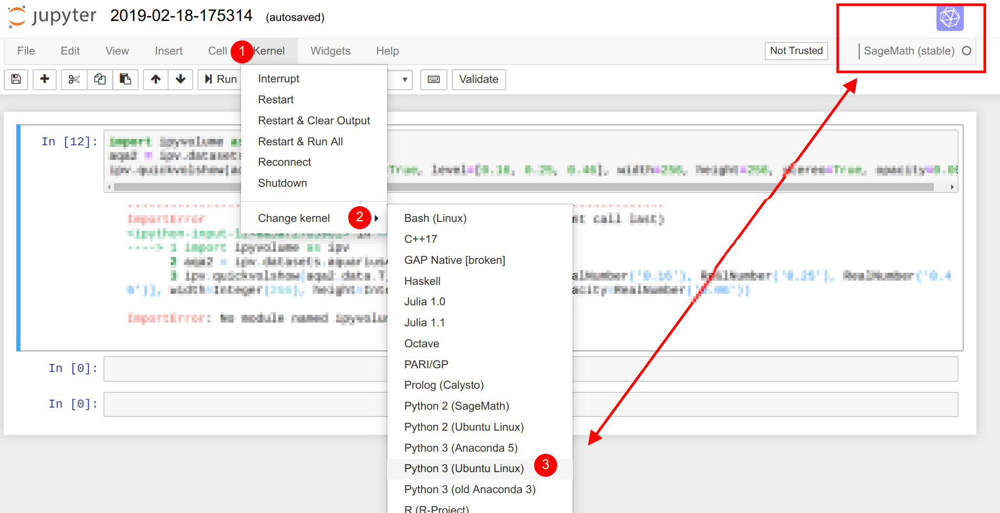

Jupyter Kernel Selection¶
The Jupyter Notebook (also in the variant of CoCalc) supports more than a single programming language. The element which instantiates a session and runs the code of a cell is called “Kernel”. (Note, CoCalc might some day rename that terminology to “Language”, i.e. the “Programming Language”)
The currently active kernel’s “display name” is visible at the top right of the working area listing the cells. In most cases, it also shows a logo, which helps you identifying it.
Note
Kernels of existing notebooks are only identified by their name. The actual meaning of it can change between environments, because kernels with the same name could be configured differently. There is no common scheme!
Therefore, after uploading any of your notebooks to CoCalc, you have to double-check which kernel it starts to spin up.
Jupyter Classic¶
Here is a sequence of steps depicted about how to change the Kernel in a notebook. The current selection is “SageMath”, and it is about to be change to “Python 3 (Ubuntu Linux)”.
Jupyter Lab¶
It works similar as above, but you have to use the main menu at the top.
CoCalc’s Jupyter Notebook¶
Look for the “Kernel” menu, in the row which is at the bottom, i.e. closest and hence most relevant to the notebook itself.

{kind=link}